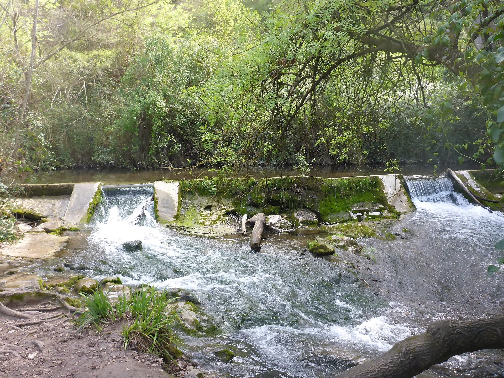
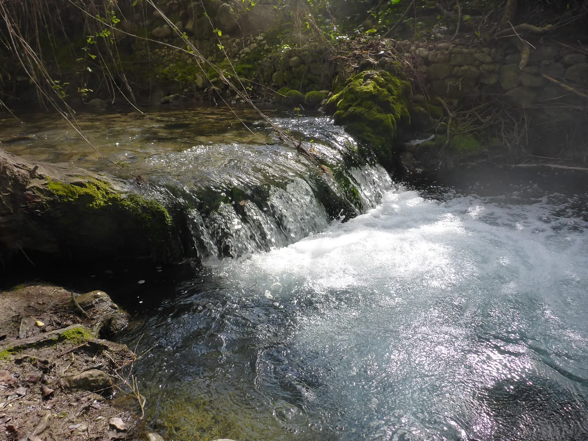

Un pequeño paréntesis.
Un lugar al que volver.

LA CASCADA
EL TIEMPO, DE OTRA MANERA
Un lugar para
bajar el ritmo.
Mirar un poco más lejos.
Respirar un poco más despacio.
Dejar que el paisaje marque la pausa.

UN NOMBRE. UN DESTINO.
Casa Rural
La Cascada
EN EL BOSQUE, SIERRA DE CÁDIZ.
Una escapada empieza al elegir el lugar.
El nuestro tiene nombre de pueblo y alma de sierra.
EL PAISAJE QUE NOS RODEA
El BosqueCÁDIZ
El verde de la ribera. La textura de la tierra. El agua que sigue su curso.
Una mirada al entorno de El Bosque, para empezar a imaginar tu próxima pausa en la Sierra de Cádiz.
NATURALEZA PARA CONTEMPLAR.
TIEMPO PARA TI.

NO DEL ALOJAMIENTO
TE ESPERAMOS AL OTRO LADO DEL TELÉFONO
Tu próxima escapada
empieza aquí.
CASA RURAL LA CASCADA EL BOSQUE
956 727 057Camino de La Torrecilla s/n11670 El Bosque, Cádiz
Para conocer el alojamiento y consultar tu estancia,
habla directamente con La Cascada.